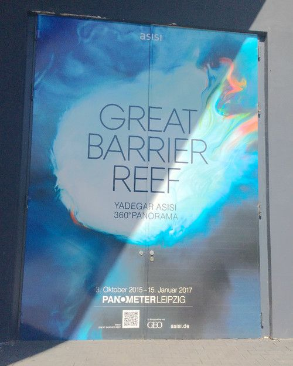
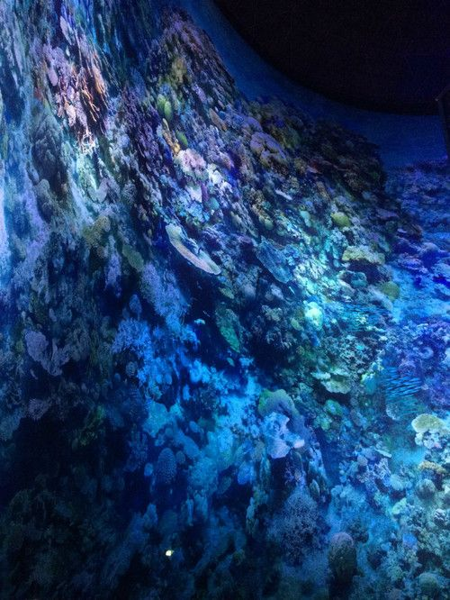
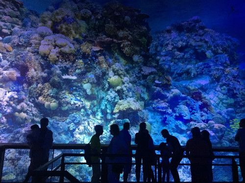
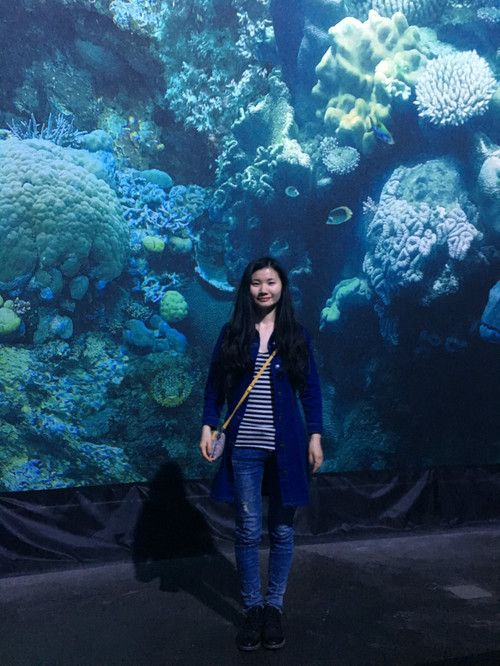

2016-04-17莱比锡大堡礁
目录
昨天坐了两个小时车，去莱比锡。
莱比锡这个城市很静谧，大片绿草地的公园和音乐家的雕塑无处不在，比较有特色的是墙上大片大片的广告。
尽管莱比锡是瓦格纳和门德尔松的故乡，也是巴赫待了28年的地方，音乐气息很浓厚，但我们不是为他们而来，而是特意来看澳大利亚大堡礁360全景这个展。展览位于莱比锡郊区的一个圆形大厅里，一看就是废弃工厂改造而成。

进入展区后，便看到一些介绍大堡礁的文字，伴随着图片或展品，让人对大堡礁有一个大致的了解。我们看到了很多有意思的海洋生物骨架。这些展品都是Asisi私人收藏的。
看完文字说明，来到一个封闭式圆柱形的房间。房间就是一个360度的巨大屏幕。整个画布高32米，环绕周长110米，360度1:1还原大堡礁的情况，很有真实感。原以为这些画面是投影，后来看制作过程的记录才知道是将图案打印到画布上，然后像挂窗帘那样挂上去慢慢展开。好聪明！！ 
由于房间太高，Asisi准备了一个5层的观看台。房间的光影和音乐配合的相当好，光线大部分时候是蓝色，声音则像鱼群的游动。我最喜欢的是黎明和傍晚这两个时候。黎明，天微微亮，少数的光线轻轻地射入海底，又安静又美。傍晚时的光线是最灿烂的，音乐也最活泼。

Asisi工作室位于柏林Kreuzberg，由Yadegar Asisi创立。自从他发现360度全景还原这种表现方式有很好的效果之后，就一发不可收拾，在柏林，德累斯顿和莱比锡都建立了Panometer展览馆。柏林的主题是《柏林墙》，德累斯顿的主题是《德累斯顿1945》（德累斯顿1945年被轰炸）和《巴洛克式德累斯顿》。在法国鲁昂和德国南部巴福洲也建立了相应的馆。我在纪录片里听到Yadegar Asisi说，未来还想还原珠穆朗玛峰，我不禁暗自希冀，要是他将地址选在国内该多好呀！
